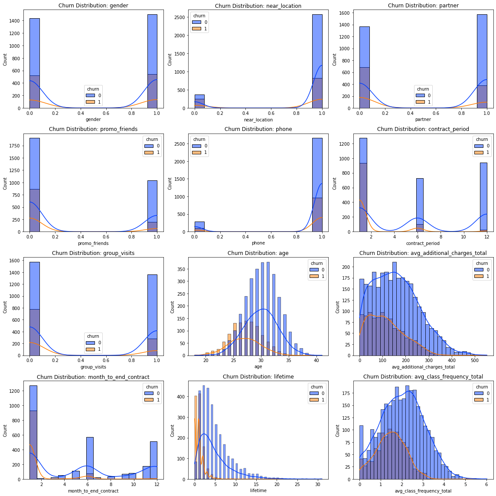

In this initial phase of our investigation, we aimed to unravel key product metrics,
including user engagement, session count within specified timeframes, session duration,
and user retention. The insights derived from this analysis would lay the foundation
for informed decision-making.
Graph Analysis: Number of Sessions vs. Average Daily Active Users

In the graph illustrating the number of sessions by session date juxtaposed with the average daily active users, several notable trends and patterns emerge, shedding light on user engagement dynamics within Yandex.Afisha. Here are the key insights drawn from the graph:
-
1. December 2017 Surge: In December 2017, we observed a remarkable surge in the number of sessions, reaching its zenith towards the end of the month. This surge can be attributed to several factors:
- New Year Celebrations: December marks the festive season, with New Year's Eve celebrations being a significant cultural event in many regions. The heightened user activity could be attributed to people seeking entertainment options and event-related information on Yandex.Afisha.
- Year-End Sales: End-of-year sales and promotions could have also driven increased user engagement as consumers searched for discounts and offers.
- Weekend Effect:The weekends during the New Year holidays likely played a role, as users had more leisure time to explore and engage with the platform.
-
2. January 2018 Decline: Following the December peak, we observed a gradual decline in the number of sessions as we entered January 2018. This decline could be explained by the end of the holiday season and the return to regular routines for users.
-
3. Consistent Trend Analysis: It is noteworthy that before October 2017 and in April/May 2018, the number of sessions per day consistently lagged behind the average number of users who logged onto Yandex.Afisha. This trend suggests that during these periods, user engagement and the frequency of sessions were relatively lower compared to other timeframes.
In summary, this graph provides a valuable snapshot of user behavior on Yandex.Afisha. The December 2017 surge can be attributed to the festive season, year-end sales, and the influence of weekend holidays. Understanding these patterns is essential for optimizing marketing strategies, content promotion, and resource allocation to ensure that user engagement remains consistently strong throughout the year.
Sessions by Device Type
This figure provides insightful data on user sessions, differentiating between two primary device types: desktop and touch. The data clearly illustrates that the desktop is the dominant device for accessing Yandex.Afisha, with users opting for it nearly four times more frequently than touch devices. This observation raises pertinent questions:
- Comfort and Usability: It's possible that the desktop experience is more comfortable and user-friendly compared to touch devices, leading to a higher adoption rate. User preference for desktops might indicate that the touch interface on Yandex.Afisha could benefit from optimization.
- Usability Testing: To address this, conducting usability testing on touch devices could reveal specific challenges or issues users face when accessing the site. Improving the touch interface based on these findings could enhance user engagement.
Session Duration Analysis:

The histogram below displaying session durations provides valuable insights into user behavior.
- The majority of sessions are under 100 seconds, with a sharp decrease in the number of sessions as session duration increases.
- This pattern suggests that most users have specific objectives when visiting Yandex.Afisha and are primarily focused on accomplishing those tasks quickly. However, there may be opportunities to captivate users and extend their sessions by offering compelling content or incentives.
- The reported average session length of 60 seconds is noteworthy. While this duration is generally sufficient for users to find and purchase specific event tickets, it may not provide ample time for exploring additional features or making supplementary purchases.
- To boost user engagement and potentially increase revenue, Yandex.Afisha could focus on strategies to extend user sessions. This might involve:
- Personalized Recommendations: Offering tailored event recommendations or related content to encourage users to explore further.
- Interactive Features: Implementing interactive features, such as event quizzes, user polls, or contests, to keep users engaged for longer periods.
Conclusion:
To sum up our exploratory data analysis, the insights gleaned from this figure emphasize critical areas for improvement within Yandex.Afisha. Specifically, the analysis underscores the significance of optimizing the touch device user experience, extending user session durations, and cultivating enhanced user engagement.
By prioritizing these key aspects, Yandex.Afisha has the potential to elevate its overall user experience, which can, in turn, lead to increased user retention and potentially higher revenue generation.
In this step of our data analysis, we delve into understanding user retention—how effectively our platform maintains user engagement over time. We calculate and visualize user retention rates over distinct time intervals following their initial registration or interaction with our platform. This analysis provides valuable insights into our platform's ability to retain users and identifies areas where improvements may be needed. By examining user behavior and retention patterns, we gain a deeper understanding of our user base's loyalty and engagement levels, which can inform strategies for enhancing user satisfaction and long-term user retention.
Heatmap Description: Retention by Source ID
The heatmap below provides a visual representation of user retention percentages for different source IDs over four distinct time frames: 0 days, 7 days, 14 days, and 30 days. Retention, in this context, measures the percentage of users who continued to engage with Yandex.Afisha over the specified periods after their initial registration.
Key Observations:
- Variability in Retention: The heatmap reveals that user retention varies significantly across different source IDs. Some sources exhibit notably higher retention rates than others, while some struggle to retain users.
- Short-Term vs. Long-Term Retention: Notice the gradual decline in retention percentages as we move from left to right (from 0 days to 30 days). This is expected, as retaining users over longer periods becomes increasingly challenging.
- Source ID 6: Source ID 6 stands out with exceptionally high retention percentages in the 0-day and 7-day time frames, but it experiences a dramatic drop in the 14-day and 30-day time frames. Further investigation is warranted to understand this pattern.
{kind=link}